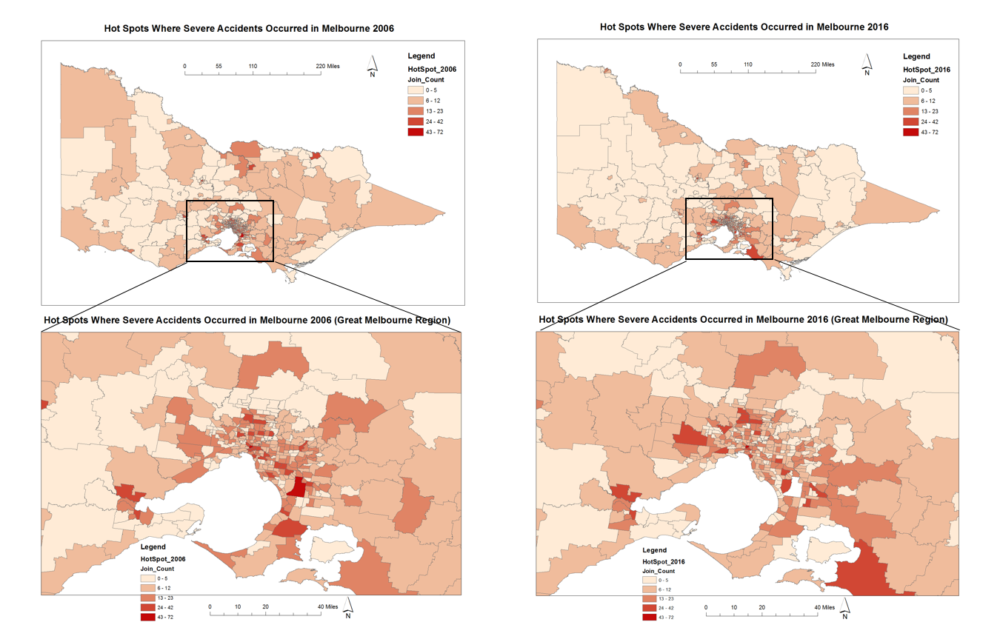

In this task, the optimized hot spot analysis was used to compute the hot spots where severe accidents occurred in Melbourne for the years 2006 and 2016. The spatial reference system WGS84 was used in this analysis. Four maps were created, as shown above. Using different colors from light red to dark red to represent the level of accident numbers in each area. The accident count numbers were divided into 5 levels.
According to the optimized hot spot analysis, the distribution of traffic accidents throughout Victoria in 2006 was more evenly distributed. In 2016, the frequency of the accidents tend to cluster around Melbourne city. In other words, the CBD of Melbourne and its surrounding areas were experiencing more car accident than ten years ago. And the number of accidents decreased in remote suburbs during this decade. In 2006, the number of car accidents in the southeastern region of Victoria was relatively high. But in 2016, it is obvious that the number of car accident dropped in that area.
The reason for this is probably that during this decade, the construction of roads and transport infrastructure has been continuously improved and upgraded in the remote regions. Thus the number of car accidents and casualty reduced. In addition, to some extent, the frequent occurrence of the car accident also represents the density of the population. So the clustering of accidents may result from more and more residents from the remote suburbs moving to Melbourne city during this decade.